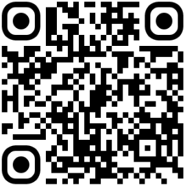
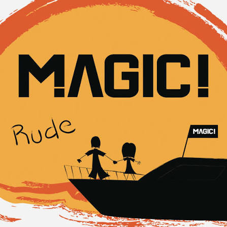
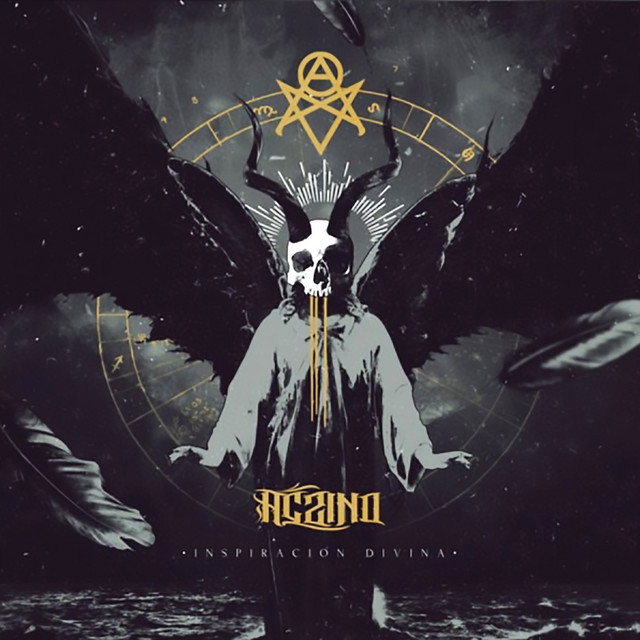
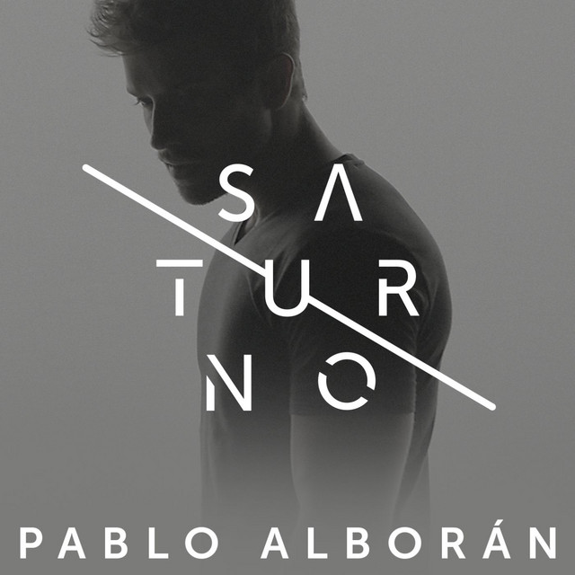
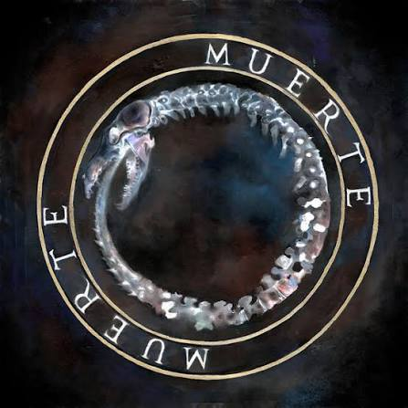
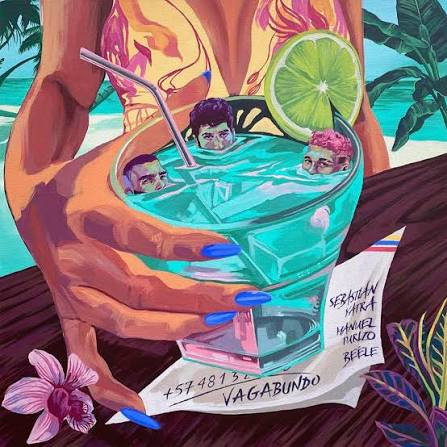
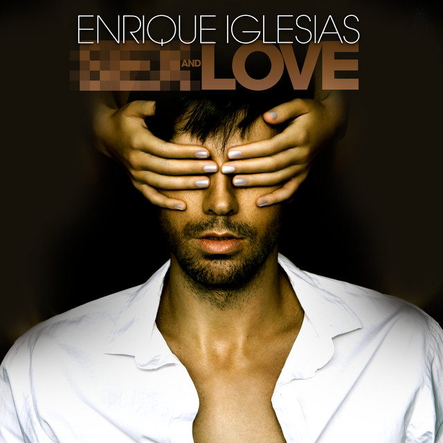
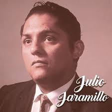
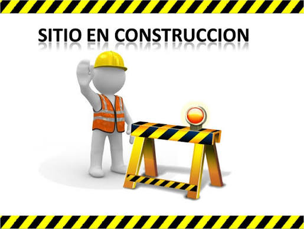
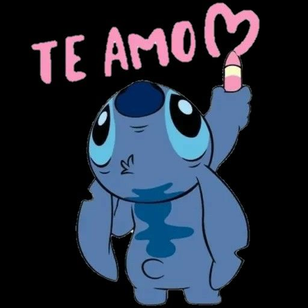

Why do i miss you?
Algunas historias terminan, algunas permanecen en el corazón y tu siempre estaras en el mio.
¿Por qué te extraño?
Si me preguntas por que te extraño en primer lugar te diria que por los recuerdos por lo que vivimos alguna vez y el como me senti en ese entonces a tu lado pero la verdad respondiendo mas afondo seria que por que nunca he dejado de amarte y aun lo sigo haciendo te extraño por lo que fuiste y eres aun en mi vida dia tras dia aunque ya no estes presente de forma fisica.
Y pues la verdad no se como o que escribirte en si ya que tengo en este momento muchas ideas, pensamientos y sentimientos por ti asi que intentare decir lo mas concreto posible todo y sin tanto texto.
Si apesar de que ya casi vamos un año sin vernos aun pienso en ti, y mas que eso aun te amo asi allamos terminado como terminamos ese dia, aun te amo y siento mucho cariño, respeto, aprecio y amor por ti sin importar el tiempo que pase ese sentimiento ese pensamiento nunca cambiara y algo que tampoco lo hara es el hecho de que tu estaras presente en todo momento en mi vida ya que a si lo ha sido por casi un año donde al pasar por muchos lugares o ver simplemente un peluche azul me reucerda a ti muchas de las cosas que he hecho las hago pensando en mi felicidad pero de igual forma el como hubiera sido estando a tu lado y se que no se puede vivir del pasado pero la verdad creo que no estoy tan atado a el o al menos no recordandolo con tanta nostalgia ya que por ti es que he hecho cosas muy bonitas en todo este tiempo tu has sido una de las razones por las que he querido seguir avanzando por que se que al final tu siempre haz querido lo mejor para mi y que sea el mejor en lo que haga y pues si osea nunca has salido de mi mente y menos de mi corazon aun te amo.
Y cuando digo te amo me refiero mas que nada a la persona que conoci en 2023 ya que pues ya casi un año sin vernos obviamente has cambiado en todos los sentidos pero de todas formas yo aun te amo y muy probablemente te amaria hoy en dia conociendote por que al menos algo que creo en el fondo es que uno puede pasar por momentos, etapas o cambios que por mas que pasen los años si uno conocio a la persona en verdad el como es su interior la conocera siempre y por eso mismo mi amor por ti siempre existira y mas que decirte que volvamos o retomemos las cosas donde las dejamos que la verdad no quedaron bien es mas decirte que no te guardo rencor o algo por el estilo si es que en algun punto lo pensaste y pues digo todo esto desde lo que se o pienso que piensas de mi y tambien por el hecho de que preferiria decirte muchas cosas en persona pero se que es casi imposible asi que por eso mismo te digo que no sabia por donde empezar o en si que decir la verdad pero pues eso, no te guardo rencor de nada y pues a la final cai en cuenta que en gran parte te culpe muchas por problemas que tuvimos y pues eso no era asi evidentemente ya que eramos dos y que por mas que fuera un problema no era buscar un culpable sino resolver en si el problema y hacer saber que el uno estaba para el otro y pues para mi siempre lo estuviste pero siento que muchas veces no creo que hayas sentido que lo fui yo contigo por lo que te digo y pues de esto cai en cuenta ya mucho tiempo despues y que lo unico que me queda por decirte es perdon por mis fallos en la relacion mi errores el no haberte dado como esa seguridad a mi lado supongo y el haberte dejado siempre con toda la culpa y que pues tambien un error mio fue el no haberme hecho respetar en ciertas cosas que no debieron pasar y ya eso es cosa pasada la verdad no se puede cambiar no puedo cambiar lo que hice lo que no hice pero si el ahora y por eso todo esto el seguir buscandote sin saber si en verdad quieres que siga haciendolo pero pues hasta que no me mandes a la mrd seguramente no deje de hacerlo ya que por lo mismo que se en que me equivoque en el pasado sabre hacer un futuro mejor tanto para mi como para mi pareja y ojala un dia quieras vovler a hablar conmigo vuelvo y te digo lo que dije hace unos meses y es que siempre podras contar conmigo ya que siempre estare para ti y sabes donde me puedes encontrar y todo nunca te recibire de mala forma o algo por el estilo todo lo contrario lo hare feliz de poder volver a verte de ayudarte de saber de ti
Algo por decir o que quiero que sepas aun mas como claro por si aun no lo esta es que aun te amo por como tu eres y siempre fuiste conmigo todos los momentos unicos que vivimos lo que aprendi a tu lado lo que senti a tu lado son cosas que jamas el tiempo ni nadie podra cambiar eres y seguiras siendo mi gran amor por muchos muchos años de aqui a la luna y de regreso a paso de tortuga tu siempre seras mi sapita la que amo con todo lo que es una mujer ya grande la que me imagino hoy en dia ya estas con tus peques eseñandoles una mujer que ama y seguira amando toda su vida su profesion una mujer cariñosa, atenta, lista, amable linda y con un gran corazon que cualquiera que tenga el gusto de conocerte estara con una persona incondicional y unica que hara que su vida sea mas feliz aun en mi sigues despertando esa sensacion de nervios y miedo se que es ridiculo ya que no, nos hemos visto en mucho tiempo pero el con solo pensar en ti me sale una sonrisa o me pongo nervioso al punto de ayer cuando vi tu nota de "mmm, the song" la verdad aceleraste mi corazon el pensar que eso era de cierta forma para mi pues hizo que me llenara de euforia y una alegria tan grande, aun eres una parte muy importamnte en mi el como en verdad un solo mensaje tuyo puede cambiar todo asi ni sea para mi pero pues ahi estoy yo de pendejo pensando que si y seguire pensando en ti en todo lo bueno que vivimos el como contigo me nacio hacer muchas cosas que jamas pense que haria en un momento y siempre llevare en mi todos esos recuerdos lindos que tuve contigo aqun conservo varias de nuestras fotos aunque de todas formas intento no abrirlas o verlas tanto por el hecho de que se pues debo como medio soltarte aunque en el fondo no quiera pero pues es lo ideal y hablando de eso ya se por que pues me dio mas ganas de escribirte y fue por que recibi un correo tuyo hace unos dias pero no tenia nada pero se me hizo muy raro y pues de ahi fue que me dio el hecho de querer escribirte y para aclarar no es no quisiera hacerlo antes pero pues se que no es del todo sano seguir esperando a alguien que quizas ya ni volvera a mi vida por eso no segui insistiendo ni nada por el estilo pero si aun te amo aun eres mucho para mi sigues siendo el amor de mi vida y las puertas de mi corazon simepre estaran abiertas para ti por que lo que tu hiciste en mi vida no tiene comparacion el como cambiaste mi forma de ver el mundo TE AMO.
Lo que mas me importa saber de ti en estos momentos si eres feliz si estas bien con saber esas cosas ya me bastara y me sobrara con eso seria feliz obvio seria mas feliz volviendo a hablar contigo pero ya muy soñador de mi parte y pues creo que dejare esto por aqui me falto resto po decir pero pues por 3 cosas no lo sigo haciendo la 1 es que quiero que leas esto pues el mismo dia que vi la nota tuya de why? lo otro es por que pues como dije preferiria decirte mas cosas en personas y tambien por que pues dejar todo por escrito y que tenga como una buena redaccion no le se a eso y que a la final siento que repito cosas y eso y lo ultimo es que por tiempo pues solo alzance esto asi que pues solo decir que esto es un poco de lo que guardo en mi corazon y pensamiento.
Y la verdad no se si vayas a leer esto o no, ya que me deje llevar por las notas de wps en mi esperanza de niño y de todos prefiero dejarlo aqui en una pagina ya que se que es algo que no eleminare o se perdera como un mensaje de wps y pues la verdad creo que es una menera diferente de decir lo que siento sin escribirte directamente y pues si quieres hablar puedes decirmelo en una nota o con un mensaje o si quieres que nos veamos hoy mismo hasta eso puedo hacerlo de verdad
Sapita💙
Esto es un apartado donde encontraras una lista de canciones donde para cada una estare describiendo los sentimientos o emociones que me genera al escucharla que es pensando en ti pero detallando su letra y el como lo interpreto contigo y lo que vivimos los dos y tambien pues estara el link de la playlist donde tengo todas esas canciones y esta lista se ira actualizando espero que cada noche jaajajaja y en la lista de spotify tendra un orden diferente al que veras aqui pues es segun lo que me arroje en ese momento y escriba asi siento que hace que lo que sienta sea mas genuino que sabiendo que cancion sigue

Una loca como tu-Nanpa Basico
Esta canción me gusto mucho su letra por que siento que representaba muy bien lo que teníamos el coro de “yo quiero una loca como tu, tu quieres un loco como yo” por el hecho de como nuestra locuras o bueno nosotros en si siempre nos complementábamos a pesar de ser diferentes en varias cosas la parte que menciona de mudarnos al sur o a nueva york siento que habla el como te seguiré a donde vayas sin importar el destino mientras sea contigo será perfecto siento que esta canción habla mucho de lo que fuimos nosotros el como hacia bobadas solo para hacerte reír y el como para mi eras todo y eres aun.

Quiereme asi-Nanpa Basico,Alka Produce
Siento que esta canción es mas como diciendo mi forma de ser y el como espero que me ames así como soy algo raro loco y el como siempre me has querido así como soy loco griton pendejo muchas veces jajaja y con mis gustos algo raros el como tu abrazaste y cuidaste una parte de mi que pues era solo mia y que siento que la volví de ambos o así lo senti a tu lado.

Cuando nadie ve-Morat
Esta si es una canción que escuche pues en ese proceso como de duelo de olvidarte y eso donde a todo el mundo le decía como nah ya te supere pero pues la realidad quería estar contigo saber de ti volver contigo a lo mejor que fuimos en esos años y pues también el hecho como es que sentía que solo con tu mirada entraba a un mundo diferente uno donde no había problemas solo estaba ese amor tan grande nuestro y que nada mas importaba en ese momento recordar las veces que nos acostábamos y nos quedamos viéndonos a los ojos el como el mundo no gira como dice la canción solo éramos los dos sapita y sapito.

Me enamora-Juanes
Una canción mas emocionante o con mas ritmo por que así mismo es como siempre me haces sentir emocionado con energía y de la misma forma tu llenas de color mi vida y me enamoras con cada parte de ti tu boca, tus ojitos, tus cacheticos, tus manos, tus pestañas, tus cejas todo de ti me enamora y pierdo la cabeza con solo verte y como dice la canción no se si te merezco que muchas veces creo que no pero espero puedas estar conmigo y poder compartir contigo por mucho tiempo y que no quiero volver a perderte y que te alejes de mi quiero estar a tu lado ya que todo contigo se vuelve mas fácil y mas hermoso.

Rude-MAGIC!
Esta es una canción que yo veo mas como para retar a tu papa y decirle que tu y yo nos vamos a casar y que siempre serás el amor de mi vida y luchare por eso sin importar quien diga lo contrario y de la misma forma lo afirmo para ti y es que luchare por ti todo el tiempo por ganarme tu amor por hacerte feliz por poder tenerte a mi lado y por todo lo lindo que hemos vivido juntos en tanto tiempo el como quiero llegar mas lejos contigo y cumplir lo de la canción en algún momento pues en verdad eres el amor de mi vida y no quiero ver a nadie mas a mi lado en ningún otro momento.

Eternamente-Aczino
Esta es una canción que descubri hace muy poco escuchando mas rap y la letra me gusto mucho por que habla de cosas como el como planeábamos nuestro futuro el como el uno para el otro fue un punto o personaje muy importante y de la misma forma el como es que me tienes para ti y el coro “Encantado de conocerte no dejo de pensarte, solo quiero tenerte tu cuerpo es arte, abrazame fuerte besame el alma, hazle el amor a mi mente” Siento que describi a la perfección muchas palabras que aveces no se expresar el como estoy muy feliz de conocerte el como no para de pensarte el como deseo tener un abrazo tuyo y lo mejor es lo del beso al alma ya que es algo que ya has hecho y hacerle el amor a mi mente igual por que me llenas de mucha euforia solo con pensarte sin realizar ninguna acción física y lo que sigue después de eso de darte mi corazón con una condición que lo tengas eternamente en verdad desde un inicio he querido eso y lo hice te di mi corazón y espero lo tengas eternamente que ya es así pero mas que sepas que en verdad es tuyo y no mio y el preferir la muerte antes que no verte es muy cierto por eso aun insisto en volver en poder verte sin importar el tiempo.

Saturno-Pablo Alboran
Esta es una de las tantas canciones que empecé a escuchar con mas frecuencia después de que te fuiste debido a que habla esta en especifico de muchas cosas que en verdad viví y vivo desde que te fuiste el volver a recordar todos aquellos momentos cuando fuimos felices el como es que quedo en otro planeta o universo aquellas promesas que nos hicimos los planes y cosas que nos falto por hacer juntos y mas que todo siento que es el poder pedir perdón algo que me costo muchas veces dar y que creo lo di pero siempre echando en cara ese perdón y hacerlo hace que en verdad no fuera un perdón y que hoy en día solo quiero verte a los ojos y decir cuanto siento haberte fallado en muchos momento como te deje sola con todo.

San lucas-Kevin Kaarl
Esta canción la descubri cuando estuve en el colegio cuando de hecho empezamos a salir por la clase de música y que en un inicio no le preste atencio ya hoy en día le encuentro mas sentido por el hecho de que habla de cosas que aveces yo no supe como decir o demostrar creo y el como siempre he querido estar contigo de una forma mas allá de lo físico y el poder estarlo sin importar los demás como en la canción que menciona a tus papas y el desnudar tu alma y dedicarle una canción siento que lo hice no con esta lógicamente pero si con otras tantas que creo que pude ver aquella niña que me enamoro día a día que me cautivo con su forma de ser con todos en especial conmigo el como tu sanaste muchas cosas dentro de mi y como siempre estuviste a mi lado y lo sigues estando sigues siendo una presencia un amor que nunca se ira que siento que siempre me impulsara a mejoras en todo gracias por ser tu la que desnudo mi alma me conoció y me amo.

A dios le pido-Juanes
Una canción que siento que es una forma como de orar por ti sin hacerlo en silencio el hecho del coro siempre mencionar A dios le pido es algo muy en lo correcto ya que a diario espero que te vaya bien es todo lo que hagas en tu vida y como es que siempre estaré dispuesto a dar de mi para que tu estes bien si es que en algún momento me llegaras a necesitar aunque lo dudo creo que seria mas al contrario la verdad.

Las locuras mias-Silvester Dangon
Una de mis canciones favoritas a pesar de ser vallenato y que no soy tan fan del genero pero con esta siento que habla de como es que mis sentimientos por ti nunca los he podido controlar y siempre he querido como dar de todo por ti el volverme loco por ti y querer hacer de todo para poder enamorarte, enamorarte con exactamente todas esas locuras mias que muchas veces ni yo sabia como las hacia y el como ahorita pienso en mil locuras pero no se si eso te enamore o te asuste jajajajaja y también siento que refleja el como es que te gustaban ese tipo de cosas que hacia por ti locas o que no todos hacían una de las que me acuerdo que creo yo no fue locura si no algo normal que fue el día de tu presentación en Cafam fui y te acompañe y para animarte y tranquilizarte te mande un video mío jodiendo en un centro comercial o el cómo un día nos pusimos mascaras de dinosaurios o cuando entrabamos y jugábamos con las espadas de star wars o cuando yo me burlaba de las personas que se que no es correcto pero de una forma te gustaba eso o eso quiero creer aun eso lo hago ajajaja.

Por fin te encontre
Una de las tantas canciones que te dedique y que me encanta su letra por que desde el titulo ya dice muy claro lo que siento y pienso y es que después de mucho tiempo encontré aquella persona con la que quiero estar por toda la vida y aquella de la que solo quiero saber durante toda mi vida la única que tiene mi atención y mi corazón y como es que contigo nunca senti que fuera como rápido o acelerado por así decirlo siento que todo aquello que hice y hago por ti por lo que despiertas en mi es algo que no se le puede marcar un ritmo y que nunca frenara pues yo por ti me muero y mas que quererte es amarte por que te amo te amo con todo mi ser y mi corazón y la parte que canta un poco mas rápido en verdad yo te quiero desde siempre y voy contigo hasta el final no quiero a nadie mas en ese camino que a ti

26/06/2026
Esto no tiene un titulo claro por que sencillamente no se bien ni como describir lo que paso hoy el hecho de volverte a ver no siento que halla palabras para definir lo que sentí ese día siento que el poner la fecha es mas lindo por que es una que no olvidare nunca el día que volví a ver al amor de mi vida y también esto lo pongo debido a que de aquí a que nos veamos puede pasar mucho tiempo quiero dejar por escrito todo lo que sentí en esta noche donde no para de pensar en ti y en tus ojos esos mismos que tanto extrañaba ver que tanto amo y que sin importar que pase esa siempre será la vista mas hermosa que podre ver en mi vida y nada ni nadie la compara, La verdad no sabia bien que hacer solo que tenia que trabajar y pues ya ajjaja fue cuando supe que estabas en tu casa que dije debo aprovechar y hacer algo por eso te insistí escribiendo para saber si ya estabas en tu casa y no se pues diré que fue suerte ya que pues cuando justo iba en camino fue cuando me contestaste y que no se en verdad quería verte y hablar así hubiera sido ese poquito de todo lo que nos falta por hablar y que lo dejo aquí por escrito que quiero saber a detalle que acciones que hice en el pasado te lastimaron se digamos como lo general pero como tu dijiste te acuerdas de todas esas cosas aun por lo mismo quiero saberlas quiero saber que cosas no volver hacer y que lo digo de una vez no creo que lo haga pues ya he cambiado en muchas cosas y que en verdad que con decirme en que falle nunca más volveré a lastimarte y cuando ese día llegue en el que me cuentes todo lo que te lastimo lo que hizo que te alejara de mi aun quieres conocerme hablar conmigo pues yo estaré encantado de poder compartir contigo por que si o te estaré esperando y que se que para recuperar tu confianza tu cariño tu amor, a ti en general es algo que no tomara ni siquiera un año o dos se que serán mas pero que sin importar que yo esperare por ti por que no quiero a nadie mas que no seas tu ósea Karen Sofia Pérez Ovalle la única mujer que he amado y que seguiré amando hasta el último de mis días yo no tengo prisa por encontrar a alguien mas por que sencillamente no necesito a alguien mas y no quiero a nadie mas te quiero a ti y así me lleve esta y la otra vida poder volver a tu lado pues bueno es un precio que estoy dispuesto a pagar con tal de recuperar tu confianza tu amor con tal de saber de que estas bien por que es lo que mas quiero por eso te digo ese día tu tomaras esa decisión de si seguir hablando o no conmigo y como te dije si la decisión que sientas que es la correcta y mejor para ti la respetare y si me pides que ya no vuelva me asegurare de que así sea pero nunca dejare de amarte por que eso si lo diré a todo mundo yo a ti te amo como nadie y como a nadie amara por que tú eres la única tu eres mi sapita y eso es algo que dura para toda la vida y las que le siguen yo estaré esperando por ti cuando me quieras dar la oportunidad de demostrar con acciones que yo te amo por que se que eso se puso en duda con todo lo que hice pero en verdad lo hago y no importara el tiempo siempre lo hare y si tengo que esperar 10000000 años para volver a estar a tu lado volver a tenerte a ti lo hare y… si quería llorar y casi lo hago mas cuando me dijiste que te acordabas de todo lo que hice mal el como te aleje de mi y seguí mi camino y sobre todo por que ahí supe mas claro el daño que te hice y el como yo cause todo esto el separarnos y mas que eso el lastimarte por que eso es algo que no quería que pasara y que paso y es algo que nunca me perdonare y no me mal entiendas pues no lo veo como algo que me heches en cara y como tu dijiste hay que retomar el pasado para saber en que la cague y si quiero saber bien todo eso por que quiero mejorar para ti para mi por poder formar algo nuevo algo basado en el presente y en el futuro no en el pasado o bueno como te dije en verdad yo ahora solo recuerdo lo bueno es con lo único que me quiero quedar del pasado pues es lo único que en verdad vale la pena recordar y por que es lo único que en verdad importa del paso lo bueno que paso y pase a tu lado y esto lo digo y pienso hoy por que como dije al inicio quien sabe cuando nos podamos ver para hablar bien solo espero poder demostrar que esa persona que conociste en 2025 sea solo un mal recuerdo de lo que soy hoy en día y mas que eso solo un momento donde supiste que falle y no volvió a pasar solo espero que me permitas poder borrar con acciones esa versión mía con la que te quedaste y darte una mejor una que no piensa volver a alejarte.
Aun estas en mis sueños-Rata blanca
Una canción fantasiosa llena de magia y amor y esta es una de mis favoritas tanto por el genero de la música la banda como su letra el como transmite todo aquello que pienso el como aun te sueño casi todas las noches y las que no se me olvida aquel sueño, y que muchas veces preferiría que ese sueño fuera la realidad pero termino despertando y solo espero poder volver a dormir por la noche para soñarte una vez mas un pensamiento que tuve durante estos meses la única forma de verte sentirte olerte tu eres mi sueño mas hermoso aquel que siempre llevare en mi ser, en mi corazón y que a pesar de todo siempre te llevare en mis sueños siempre soñare contigo hasta la muerte.

Viene y se va-Mauro castillo
Una salsa movida linda pa bailar y que con esa letra resalta el como aun te busco el como espero que pienses en mi y mas que eso que sepas que siempre te estaré buscando por que nunca podre olvidarte por que siempre te voy amar por todo lo que eres y has sido conmigo el como mi corazón siempre estará atado a ti el como este te pertenece a ti por que es tuyo eres la única que puede decir que lo tiene por que solo a ti he amado y llegare a amar para toda la vida siempre te necesitare estar contigo saber de ti.

Vivo pensando en ti-Maluma Felipe pelaez
Una canción que desde un inicio habla del como es que yo vivo pensando en ti y es que es así solo vivo pensando en ti ojala poder decir que ocupar mi mente hace que te olvide o piensa solo en lo que estoy haciendo pero no es así y así a sido desde un inicio haga lo que haga tu siempre estas ahí presente sin importar que ya que todo me recuerda a ti y el pensarte es lo mas lindo que me pasa a diario y el como para mi tu eres todo mi princesa, mi locura, mi refugio, lo que anhelo, mi mundo tu eres todo para mi sin ti no seria como soy hoy en día y siento que de las mejores decisiones que he tomado en mi vida fue saludarte y molestarte cada vez que ibas a mi puesto el pedirte tu numero para ayudarte con una tarea y el molestarte diciéndote sapa para luego decirte mi sapita que siempre lo serás.

Maquiavelico-Canserbero
Este rap igual que la mayoría los empecé a escuchar hace muy poco y esta canción me hace sentir el como recuerdo el pasado y quisiera volver a el para cambiar cosas poder hacerlo bien contigo lograr que te quedes a mi lado que no te lastime el como pienso tanto en todo lo que hemos vivido todo lo que aprendí a tu lado y sigo aprendiendo también siento que refleja que eso de “es maquiavélico meditar a solas donde tu viviste todo con ella” refleja como es que lugar a donde vaya donde pase es imposible que no piense en algún momento que vivi contigo que aprendí que rei que jugué que bese que fui feliz y no supe creo que apreciar aun mas ese momento que pensé seria eterno y lo es en mi mente y mi corazón pero no en el presente.

Me gustas mucho-Jorge celedon Alkilados
Una canción que como su titulo dice ME GUSTAS MUCHO y es que mas que gustarme tu me vuelves loco me matas yo a ti te amo con todo mi corazón sin importar que pase y que por ams que ocurran problemas lleguen otras personas nadie ni nada cambiara eso que siento por ti por que tu me encantas yo quiero darte todo como tu lo diste todo por mi y todo aquello que dejaste en mi y que también es para decir que cuando tengas duda de si aun estoy para ti, siempre lo estaré por que yo estoy preso por todo lo que eres y que siempre estaré para ti así pase el tiempo la distancia lo que sea nunca importara eso ya que lo que siento siempre existirá y siempre ME GUSTARAS MUCHO.

Vagabundo-Sebastian Yatra-Manuel turizo
Una canción que siento que refleja el amor que ambos nos tenemos que sin importar el tiempo la distancia siempre estará ahí presente y que siempre será esa misma intensidad que siempre lo ha tenido desde un inicio y que el amor que tu me diste es uno que nunca se olvidara que nadie llenara por que es imposible que alguien llene o me de lo que me dio el amor de mi vida ósea no solo eres tu y nadie mas la verdad y si en si es eso ósea así pase el tiempo nunca te olvidare nunca olvidare que te amo por nunca pasara eso nunca dejare de amarte lo único que puede pasar para que lo deje de hacer es que me muera y aun así moriría de amor por ti.

27/06/2026
No tienes ni idea lo feliz que estoy en este momento no puedo contener lo feliz que estoy solo con poder verte hablar contigo y ver por un momento esa sonrisa tuya no tiene comparación no tiene precio solo quiero pegar en ese momento en cuando nos estamos despidiendo y el como por los nervios se me olvida que decirte y ya luego en la moto me acuerdo jajaja que pena mucha belleza me vuelve loco y me hace olvidar de todo en verdad deseaba mucho poder llevarte a tu casa en la moto poder llevarte a dónde sea en realidad en ella compartir contigo así fuera ese ratico que para mí es oro por lo mismo baje rápido de tu cuadra con la moto por lo feliz que estoy y por lo mismo no tengo ni sueño jajaja me fui por tus la del dorado rápido de la felicidad de saber que me dijiste varias veces que manejara lento y bien eso me dió muchisisisisima felicidad valió totalmente la pena ir por ti y más por como me vas a pagar la verdad espero con muchas ansias ese día esa charla.
Y me pone aún más feliz ecl estar nervioso por verte eso yo en la moto estaba que temblaba pero no del frío por qué temblaba la mano y todo el ni saber cómo llevar las rosas y ingeniarmelas como el bien inge que soy y esperar y esperar fueron los 15 minutos más largos de mi vida el no saber cómo reaccionarias o si saldrías ya después de 10 minutos si tuve miedo la real pero ya cuando te Vi todo se pasó y no se de alguna forma tu me diste tranquilidad al manejar no sentí esa presión que siento llevando a mi ma finito me sentía seguro y si no quería ni llegar a tu casa con tal de tenerte a mi lado.
No me toquen ese vals-Julio Jaramillo
Una canción romántica de esas antiguas lindas hermosas para escuchar a media noche para recordar un viejo amor uno que intentas olvidar con todo tu ser pero que a la final terminas recordando pasando por donde sea ya que siempre ese recuerdo esta contigo esa persona no se va no se olvida solo te acostumbras a no verla a no estar con ella y esa costumbre duele mas que el olvidarla pues sabes por qué no está ahí contigo sabes por que solo vives de su recuerdo y no con ella a su lado. Y esto que describi de la cancion fue exactamente lo que vivi cuando no estaba contigo intente olvidarte pero solo me acostumbre a no verte y no saber nada de ti aunque queria correr a tu casa a saber de ti a ver como estabas pero solo me quede con tu reucerdo pues pensaba que si estabas mejor sin mi yo no tenia nada que ir a hacer al buscarte la verdad era ir a estorbar y arruinar o joder tu paz y felicidad.

El doctorado-Tony Dize
Una canción romántica que siento que habla de como uno tiene o cree tener un conocimiento muy avanzado sobre lo que siente y del como se expresa con sus sentimientos pero que al conocer a alguien tan especial hace ver que todo lo que tenía lo pierde dándoselo todo a esa persona por que se volvió su todo su conocimiento se volvió de ella porque toda la teoría todos esos doctorados todo ese conocimiento no importan si con eso no puede tener a su amada a su lado y que por lo mismo se muere al no saber que hacer con todo eso y como quiere seguir pero no sabe como sin su amor ya que pierde sentido todo eso que consigue ya que muchas veces uno es impulsado por tener algo y mas que lo material y esa satisfacción personal es el poder compartirla con la persona que mas te importa e interesa que este a tu lado pa todos esos momentos especiales y logros. Esto fue algo que me apso cuando recien empezamos a salir los dos que fue como que empece a ser cosas que nunca pense que haria y pues de todos modos hoy en dia aun me sorprendo pues nunca pense llegar a amar tanto a alguien como te amo a ti y agradezco que seas tu pues eres de lo mejor que me ha pasado en la vida y que cuando te fuiste pues ya lo que tenia no daba para tenerte a mi lado en un punto me senti menos que no vali la pena en verdad y que pues a la final si me quede solo como siempre pero fue por mi culpa en realidad obviamente no? pero ens i eso siento que es la cancion como no pude mantenerte a mi lado a pesar de todo lo que tenia y no material si no como era pero a la final no fui nada bueno para ti.

Loco-Enrique iglesias, Romeo santos
Una canción que habla de un hombre que ama con locura a una mujer al amor de su vida y que sabe que esta misma su luna se ira y sabe el dolor que le dejara pues este se muere por ella por su labios por su compañía y hasta el punto de pedirle que no se vaya de rodillas pues sabe todo lo que han pasado juntos todas las promesas todo ese sentimiento que sabe que si le llega a decir adiós nunca le perdonara por dejarlo con todos estos sentimientos en las manos pero para mi siento que es mas el no perdonarse por no poder darle todo aquello que debió en su momento y que por su misma locura la perdió y hizo que terminaran de esa forma el pidiendo de rodillas a su luna que no se vaya aun sabiendo que la cago.

El poeta-Chino & Nacho
Un poema más que canción jurándole amor a su amada y recordándole como es que este daría lo que fuera por ella que solo tendría que pedírselo y el como este desea poder un día decir que es su mujer y el cómo el haría de todo por ella por verla feliz por querer tenerla a su lado ya que un hombre enamorado logra hacer de todo por aquella persona que la hace feliz día a día sin importar la circunstancia esta le hará feliz así sea solo con verla o imaginarla a su lado pues el lo único que quiere es ser de esa misma forma que lo es ella para el su felicidad el demostrarle como es que para el el amor de su vida el como con solo un gesto de ella el ya es feliz pues sabe que cualquier cosa que venga de ella significara mucho para su corazón para su amor y que sabe que con solo una sonrisa de esa persona habrá valido toda la pena el esfuerzo que hace por ser un poeta y escribir para ella y demostrar su amor.

Odiame-Julio Jaramillo
Una canción igual vieja linda y para tomar con una copa de whisky y es que esta duele ya que es pedir mejor el odio que el olvido ya que este duele menos pues lo que se odia es aquello que una vez mas se quiso el olvido por su parte solo te deja con la incertidumbre de su fuiste o no querido si valiste o no la pena si en verdad estaban destinados a estar juntos siendo tan diferentes pero de igual forma el prefiere ser odiado a olvidado pues esto lo llegara a lastimar menos que pasar como un fantasma por su vida.

Casate conmigo-Silvestre Dangond, Nicky Jam
Una canción que habla del como es que si se ama de verdad a alguien darás lo que sea por esta que sin importar los problemas los obstáculos de una forma u otra han llegado a volverse a encontrar pues por algo siguen ahí juntos por algo ninguno se alejo del todo del otro y mas a lo que pienso es que si no te saco de mi mente de mi corazón es por algo mas que un despecho una obsesión es un amor verdadero pues quiero estar contigo y quiero casarme contigo por que para mi eres todo sin importar que contigo soy mas fuerte pues me has visto en muchos malos momentos y siempre me diste ese apoyo siempre curaste mi corazón cuando lo necesite y no me dejaste como muchos otros lo hicieron en el camino y solo quiero estar contigo pues no quiero a nadie mas a mi lado.

Besame sin sentir-Micro TDH
Siento que esta canción es de esas que muchas veces las palabras en vez de decir mas dicen menos y que mas lo que se ve lo que se siente se toca pues aquello que en verdad dice como uno se siente muchas veces las palabras solo lo enredan mas a uno pues uno entre tanto sentimiento y pensamiento no sabe ni como organizar aquello que con un gesto ya dice todo pues muchas veces me pasa a mi que al verte las palabras se me traban y no se ni que decir digo bobadas y que por lo mismo siento que gesto pequeños como una sonrisa una mirada un movimiento dice mas que lo que sale de la boca pues también esta cancion dice como es que estos gestos pueden llevar al amor nuevamente sin decir nada y el como tal vez con esto si nos besamos sin sentir al final sintamos de todo esa conexión que sin palabras se entendía de una forma muy hermosa.

…Y al final-Enrique Bunbury
Que puede decir de aquellas letras del hombre que mas admiro artísticamente hablando y más de esta canción que habla de ese amor que solo esperar poder decirle una ultima vez lo que siente lo que te enseñaron y como se espera ese ultimo baile donde quieres solo abrazarla fuertemente entre tus brazos toda la noche dando vueltas esperando que nunca termine ese baile pues sabes que será la ultima vez y que de igual forma solo quieres dar esa última explicación esa última demostración de lo que siente del como la quieres del como la amas pues lo que único que al final quieres en realidad es poder verla feliz nuevamente y el decir dando vueltas si aguantas de pie es para mi aquello de la vida las vueltas de la vida verte feliz por mas que pase de todo poder decirte que al final aun te amo que en ese ultimo baltz fue el mas especial y mas emocional pues es aquel donde se que te soltare para dejarte ser feliz.

Devuélveme el corazón-Sebastian yatra
Su letra habla a la perfección del cómo me sentí y siento pues a la final la culpa fue mía y más que pedirte que me devuelvas el corazón que es tuyo es como decirte mas bien vuelve conmigo pues para mi tu eres todo mi corazón y el hecho de seguir intentado sin importar el resultado es peor que no hacer nada y por lo mismo prefiero perdonar pues eso significa amar muy tarde entendí esas palabras cuando ya mi amor no era lo suficiente para tener ese perdón donde por yo no saber amar te perdí y ya no hay forma de volver a ese tiempo y hacerlo diferente pues hoy en día intento corregirlo pero quien sabe si de esa forma pueda encender aquel amor que un día brillo con tanta intensidad pues ese amor que un día sentiste posiblemente hoy en día ya no este para que de esa forma allá un perdón y podamos volver.

Yo te esperare-Cali y el Dandee
Ya desde su titulo se sabe que quiere decir esta canción pues yo te esperare pues veo en tus ojos que aun hay algo no se que si amor odio o algo mas pues siento que nuestra historia no siento que haya terminado ya pues de una u otra forma terminamos volviendo a hablar a vernos o algo no se quizás solo son ideas locas o estúpidas mías pero lo que si no lo es, es el pensar que te esperare sin importar el tiempo pues tu eres el amor de mi vida y que sin ti mi vida perdió algo y ahora hay un vacio en mi que es mi corazón que se fue detrás de ti pues es tuyo pero pues no puedo ir detrás de ti a obligarte a que vuelvas pues solo me queda esperar que vuelvas ya sea como amiga conocida o algo mas pero siempre estar las puertas de mi vida abiertas para recibirte para volver a tenerte en mi vida y recuperar mi corazón por un breve momento.

30/06/2026
Bueno esto lo escribo un dia despues de que nos vimos y por fin hablamos de lo que teniamos que habalr y la verdad hay muchas cosas en mi cabeza demasiadas muchos pensamientos sentimientos y cosas que hoy un dia despues siento y pienso jajaja repeti mucho las mismas palabras pero pues en si lo que mas pienso es que siento que ese tiempo que estuvimos juntos se paso muy rapido osea fue un parpadeo a pesar de que fue desde las 9 por ahi que estabamos juntos pero para mi es como si hubiera sido 30 minutos te extraño el poder escuchar tu voz hablar contigo verte a esos ojasos que tu tienes y algo que me dio alegria que me acabo de acordar en este momento es que mecionaste esto osea la pagina el como describi canciones y eso y pues viendo que te quejaste de eso ahorita por la noche cambiare eso las volvere a escuhar y te dire como las veo con los dos o conmigo en cuyo caso no? y pues de resto no se siento que en persona eres muy diferente que por chat y creo que intentas guardar mas distancia por chat que en persona o pues es mi impresion la verdad y otra cosa que pues miro y destaco es que anoche me hiciste prometer no ir rapido y todo con pinki promise y eso me parecio muylindo en ese momento pense le importo jajajaj si asi tal cual lo pense y pues tambien de eso destaco como lo que decias de el tiempo de que tomara mucho el vovler si es que volvemos por que aun no se si quieras seguir hablando conmigo jajaja y algo que me llena como de esperanza a que si lo haremos que si seguiremos hablando es que anoche ya cada uno es su house mouse de mickey mouse me decias que tenias como esa espinita por asi decirlo de lo de que estuvo besuqueandome con otras y eso y pues yo lo veo como que quieres ver como digamos asimilar eso que pase y seguir hablando conmigo puede que yo este mal pero pues es lo que pienso y ahorita antes de irme pues el que me dijieras nuevamente sapito fue como ufff si amo eso sigue con eso jajajajaja y pues ahorita mas tarde ire a visitarte tu aun no lo sabes pero ire por eso las gomitas me pondre a buscarte local por local para saludarte darte las gomitas y cantarte la cancion del man es german por que quiero verte no puedo recogerte tristemente y no por que no quiera por que pues aja mi ma pero de todas formas quiero verte asi sea por solo unos 5 minutos y tambien saber en que trabajas ya que no me has dicho jajajaj y pues ahorita seguire escribiendo esto seguire con las canciones corregiere las otras y pues nadaa hasta ahorita mas tarde. 3:37pm
Bueno ya volvi a la casa ya te vi y encontre en tu trabajo que por fin supe cual era jajajaja si me imagine que seria ese por la hora y pues que me diste a entender que no era de comida y que lindo fue verte asi trabajando cahmbeando me gusto que pena no haber podido quedarme hasta que salieras pero pues ya eso solucionado y pues si queria quedarme pero si pailas ademas de que te vi re ocupada la gente no tiene nada que hacer un martes por la noche la verdad para nada fui ese el miercoles a las 8 jajaja a y pue sno pude hacer lo de la cancion eso me tocara luego es que pues tu ocupada y tu jefa al lado como que no jajajaja por ahi por mi te despedian o algo y no que mal eso y bueno ahora si vovlere a hablar del dia de ayer y pues ahorita tengo la duda de si quieres o no hablar conmigo el conocernos nuevamente y todo no se pero pues eso imagino se ira viendo con el tiempo y de anoche en un inicio te senti como al hablar medio agresiva cuando dijiste en lo que la habia cagado pero pues yo dije eso lo dices asi por que pues el recordar eso pues no es nada chimba para ti asi que era logico ya luego mientras mas hablabamos y todo senti que ya estabas como mas tranquila mas relajada en si para hablar yo tenia demasiado frio y re nervioso por lo mismo estaba tan inquieto y pues de todo lo que me dijiste el como te lastime por mis acciones por no haber sanado y haber vuelto con dolor y aun recordando lo que antes habia causado problemas y eso pues fue mi error y no hay excusa, justificacion para lo que te hice pasar en ese tiempo y como te decia pedir perdon decir losiento son palabras vacias si no hay en verdad un cambio despues de decir estas palabras y pues es algo que creo que ya he hecho ya cambie solo falta que tu lo veas que pues me conozcas asi como yo a ti tambien debo de conocerte pues si eso es lo que quieres claro esta y una de las cosas que siento yo que me quedo como mas marcada es que hubo varios momentos por no decir que toda la noche que senti que solo viendote a los ojos estaba en otro mundo uno donde queria estar para toda la vida el verte otra vez a los ojos es muy emocionante para mi el tenerte cerca todo es como si fuera la primera vez la verdad y muchas cosas al final si lo son el ir a un mirador contigo el andar de noche en la moto el que te pusieras mi casco tambien fue algo que me parecio de lo mas lindo no se para mi fue especial que dijieras y prefirieras ese casco por ser el que mas uso o tambien quizas por ser el mas caro y seguro jajajaja no se quizas pero en general para mi anoche fue una noche especial unica una que hace mucho no sentia asi y otra cosa que quisiera dejar por escrita aqui es que quieor hacer las cosas bien contigo esta vez como te dije siento que ambos ya somos mas maduros que de lo que antes vivimos y sufrimos son cosas que hoy en dia sirven para recordar que no hacer para dañar o lastimar al otro y lo digo de mi parte ya se en que falle aun siento que debo dejarlo por escrito ya de forma personal pa mi eso pero en verdad quiero que tu y yo nos conozcamos y que esa conexion que se que aun esta en ambos vuelva y lo haga de una manera mucho mas fuerte que en el pasado mas unida y con ganas de formar un futuro juntos porque eso es lo que yo quiero un futuro a tu lado que volvamos a ser tu y yo sapita y sapito, shofiita y dylitan yo seguire luchando por ti y seguire amandote como te he dicho yo hare todo eso y mas asi tu no me quieras no me ames o incluso me odies tu eres el amor de mi vida y la verdad es que si no estamos juntos me equivoque de vida mas no de amor lo que siento por ti lo que pasa por mi cabeza cada vez que pienso en ti que eso es relativo ya que eres en lo primero que pienso al empezar mi dia y igual al terminarlo tu siempre estas presente en mi y lo seguiras estando en cad apaso que de en mi vida y pues aun tengo muchas cosas que decirte pero que prefiero sea en persona como el que vi en mi tambien que hice mal conmigo y el como soy ya en general al igual que el querer decirte de frente que dejemos atras lo malo y nos quedemos con lo bueno que es algo que ya he hecho y espero tu igual para poder empezar una nueva historia juntos y una la cual solo tendra un cierre y es vivieron felices por siempre.
No se va-Morat
Una canción que ya había escuchado hacia mucho tiempo pero nunca le di tanta importancia hasta hace unos meses cuando le preste atención a la letra y para mi antes de anoche siento que era el como recordarte el como nunca iba a olvidar este amor que tengo por ti y un pedido a la nada para que no te fueras y que te quedaras para ser felices juntos y el como es que no puedo controlar todo lo que siento por ti y pues ya hoy después de anoche la verdad es que siento que es parecido pero mas que eso es decirte que te quedes que no te vayas que te amo que quiero hacerte feliz quiero hacerte olvidar de todo lo malo y que hagamos de este amor algo inolvidable como tu ya lo eres para mi y que también es una forma de decir que te elijo a ti una y otra y otra vez sin importar nada.

Que onda perdida-Grupo Firme, Gerardo Coronel
Esta canción la empecé a escuchar antes de volviéramos la segunda vez pues no se me gusto la letra y todo y la verdad hay partes de esta que digo pegan como lo de no bloquearme del wps y el hecho de que se puede comenzar de nuevo y que siento es una forma de decir mírame aquí estoy aun loco por tu amor sin ganas de olvidarte y sin ganas de irme hasta poder recuperarte o hasta que me mandes a la mrd siento que eso significa esta canción para mi.

No puedo olvidarte-Nanpa Basico, Yoss Bones
Una de las muchas canciones que descubrí hace muy poco pero que le preste mucha atención y su letra como su propio titulo dice como es que no he podido olvidarte superarte y el como es que nadie se compara contigo tu eres única y pues si todos lo somos pero como tu nadie me hace sentir y mover el piso como tu lo haces pues contigo es con quien quiero todo no con nadie mas y que por mas que antes negué que te pensaba pues siempre lo he hecho y por lo mismo nunca sali con nadie mas por que siempre te buscaba en otras personas pero no eran tu y termine buscándote a ti aquella que tiene mi corazón y que nunca podre olvidar.

Un millón de primaveras-Vicente Fernandez
Esta mas que nada es por que se que tu pa te las ponía arto y de por si lo que dice chente es verdad solo falta un millón de primaveras para olvidarte para dejar de molestarte para ya superarte pues eso en si es poco tiempo para decir ya hasta aquí ya superemos pues para mi tiene que acabarse el mundo para que yo deje de estar luchando y de estar detrás de ti buscando recuperar ese amor tuyo esa confianza esa conexión y que pues es algo de lo cual quiero volver a tener de ti recuperarte recuperarnos a los dos lo que teníamos juntos lo lindo que formamos esa unión.

Como te atreves-Morat
Una canción que pues siento que pues habla de como ambos seguimos nuestras vidas pero que ya mirando el coro pues yo fui el primero en volver pero pues tu no respondiste pero ya 6 meses después al recibir tu correo ya la canción volví a tener sentido para mi pues volviste y ya estaba medio acostumbrado a la soledad y el que volvieras así fuera con ese correo que no se si fue por error pues revolvió todo dentro de mi pero que pues solo me hizo ver que aun te amo y que las cenizas de este amor nunca han dejado de arder pues nunca te olvide y nunca lo hare todo lo contrario yo siempre te amare siempre te buscare y siempre mi corazón será tuyo y en esa parte que dice que este funciona sin latidos es por que mi corazón se fue detrás del tuyo y es por que es tuyo mas que mio.

Enganchado a ti-Enrique Bunbury
Una cancion que siento que refleja el como no he podido alejarme ni un poco de ti pues hay muchas evidencias que dejan ver como es que ando enganchado a ti en todo momento y que muchas veces no disimulo eso y la verdad ni quiero y aunque no me quieras o me lelgues a confundir nunca dejare de querer un poco mas de ti y jamas sabre decir basta de ti por que nunca lo vere necesario pues solo te quiero a ti y quisiera en algunas ocaciones estar enganchado a ti literalmente pero imposible por que como trabajamos ambos jajajaj y mas que nada es como tambien reflejar eso que jamas podre soltarte y menos ese amor que te tengo mas que nada seria eso la verdad pues es tan grande que no creo que pueda dejarlo ir nunca pues contigo no veo limites y quiero de todo contigo como el primer dia

Si nos quedara poco tiempo-Chayanne
Esta cancion para mi es una cancion que hace muhco la escucho pero nunca la habia como puesto o visto en una situacion especifica en mi vida hasta que pues apso todo no? y es que en si siento que es una cancion para reflexionar sobre el tiempo que uno tiene en este mundo y el como uno lo aprovecha y siento que es algo que ha estado en mi desde siempre el hecho de pensar en el tiempo que uno tiene y el que hace uno con el siento que por lo mismo hago de todo por volver contigo por conseguir tu perdon y todo por que pue shoy estamos mañana quien sabe y mas en mi caso con lo pendejo que soy puede que ya mañana chao del mundo por eos mimso me tatue el memento mori para asi hacer todo en esta vida sin arrepentimientos que sea mejor decir me arrepiento de ahcerlo a decir que no lo hice y por lo mismo prefiero una y mill veces seguir demostrando y diciendote lo que siento antes que dejarmelo guardado.

Contruccion
Estamos en proceso de analisis de canciones pronto habran mas

